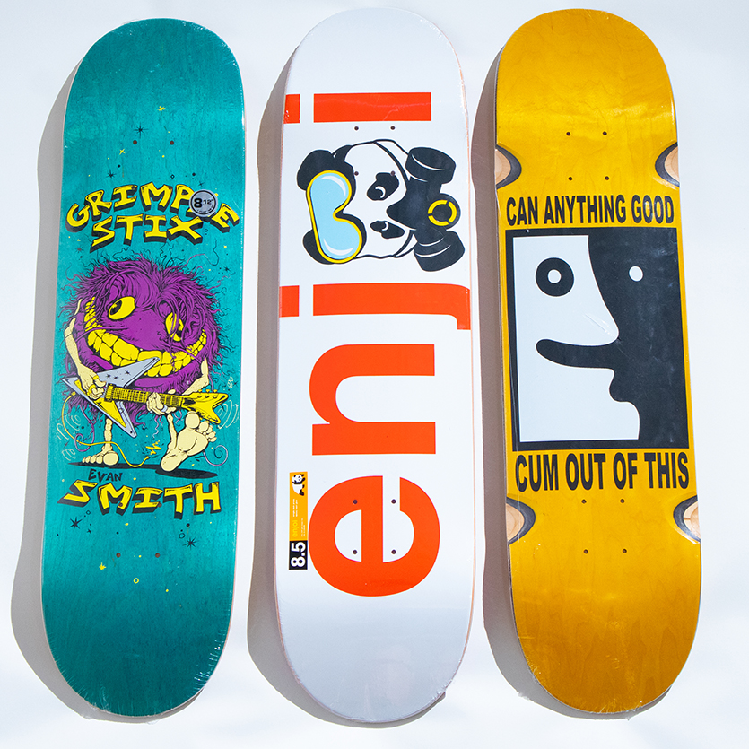

By Tony Hawk
Excerpt Sourced from Brittanica.com
Skateboarding [is a] form of recreation and sport, popular among youths, in which a person rides standing balanced on a small board mounted on wheels. Considered one of the so-called extreme sports, skateboarding as a professional sport boasts a range of competitions, including vertical and street-style events. Vertical skating (also called "vert") features aerial acrobatics performed in half-pipes that were originally built to emulate empty swimming pools. Street style features tricks performed in a real or simulated urban environment with stairs, rails, ledges, and other obstacles. Skateboarding has developed as a youth subculture that emphasizes creativity and individuality. It is an alternative to mainstream team sports, which are more formally organized and largely controlled by adults.
The first commercial skateboards appeared in 1959, but crude homemade versions of skateboards, often consisting of nothing more than old roller-skate wheels attached to a board, were first built after the turn of the 20th century. In the early 1960s, skateboard manufacturers such as Makaha and Hobie attempted to capitalize on the rising popularity of surfing by promoting skateboarding, then known as "sidewalk surfing," as an alternative diversion when no rideable waves were available. In 1963 Makaha formed the first professional skateboard team, and that same year the first skateboard competition was held in Hermosa, California. It included events in freestyle and downhill slalom skateboarding. The initial popularity of skateboarding waned over the next couple of years because of the limitations of the skateboard's maneuverability and because of warnings from safety professionals that the activity was dangerous.
Skateboards were revived in the mid-1970s after the development of the faster and more-maneuverable polyurethane wheel and the introduction of the kicktail, the raised back end of the board that makes kickturns possible. The craze spread worldwide, and skateboard magazines helped promote both the sport and young innovative riders such as Tony Alva and Stacey Peralta. The first skate park was built in Florida in 1976, and many others began to appear throughout North and South America, Europe, and Asia, all providing a variety of slopes and banked surfaces for sudden turns and stunts. It was at this time that riders started skating in empty pools and exploring the "vertical" potential of the sport. The empty pools soon gave way to half-pipes, U-shaped riding surfaces used to perform aerial stunts. Though protective gear such as helmets and knee pads was commonplace, safety concerns and escalating insurance premiums for skate parks played a major role in the sport's second fall from widespread popularity.
In the 1980s skateboarding enjoyed an underground following. Skateboarders built their own ramps and half-pipes and began skating the urban environments, creating what became known as street style. Increased board size and improved truck constructions helped the new style thrive. It was during this time that a distinctive youth subculture began to develop around the sport. Punk rock and baggy clothes became closely associated with young skaters. The daring and individualistic nature of street and vert skateboarding was spread through straight-to-video documentary films that found a large youth audience. The videos made stars of vert skaters Tony Hawk and Steve Caballero and street skaters Natas Kaupas and Mark Gonzalez, among many others. But it was the advent of large competitions, such as the X Games, an alternative sports festival sponsored by the cable television network ESPN and first held in 1995, that gave the sport mainstream exposure and a certain commercial legitimacy. Skateboarding has established itself as a professional sport while still maintaining its independence from traditional team sports. Snowboarding and in-line roller-skating have been heavily influenced by skateboarding techniques and culture.